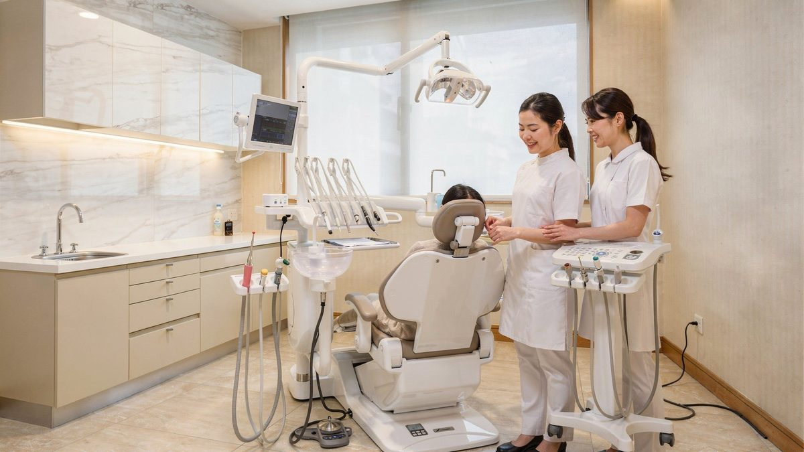
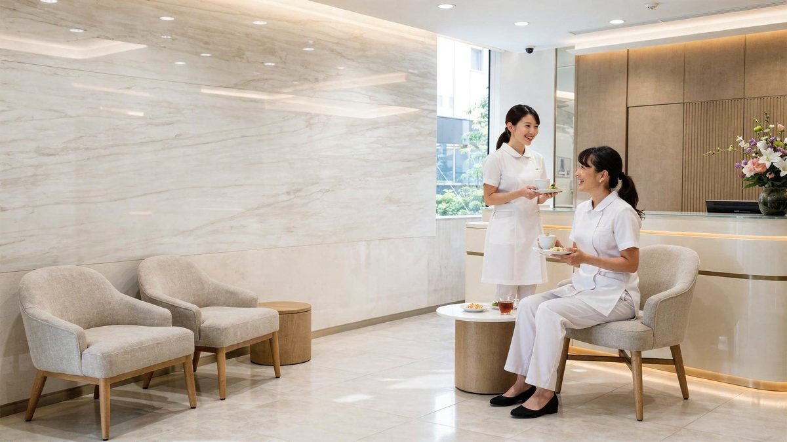
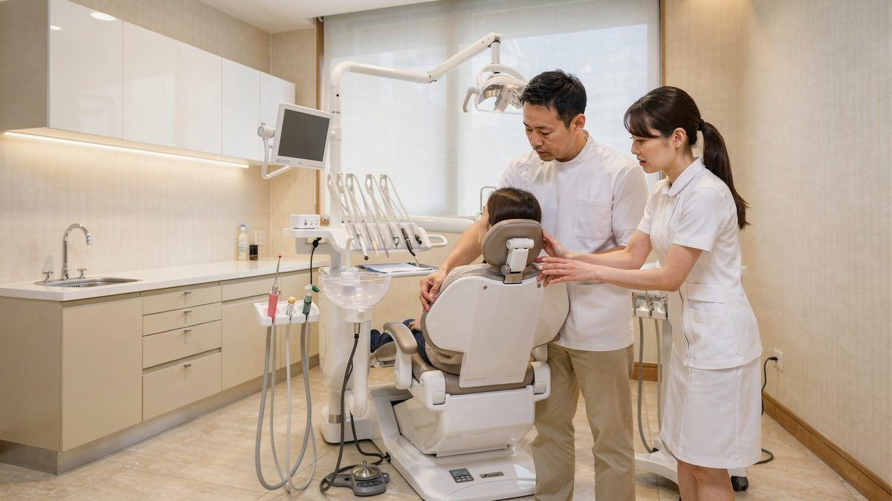
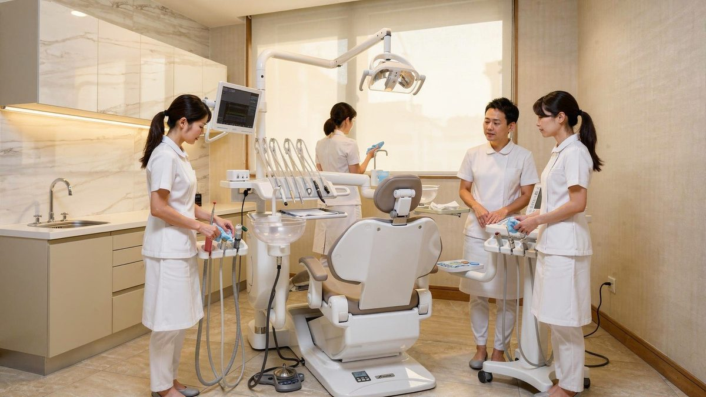

求人媒体を介さず、当院サイトから直接ご応募いただけます。
予防・メンテナンスを中心にご担当いただきます。経験者・ブランクのある方も歓迎します。
一般・自由診療を含む診療をご担当いただきます。研鑽を支援する体制があります。
朝礼から片付け・共有まで、チームで連携しながら一日を進めています。
一日の予約状況や診療内容を確認し、スタッフ全員でスムーズな診療の準備を行います。

歯科医師と歯科衛生士が連携し、患者さまに安心していただける丁寧な診療を行います。

スタッフ同士でリラックスしながら昼休憩を取り、午後の診療に向けてしっかりと気持ちを整えます。

午後もチームワークを大切にしながら、患者さま一人ひとりに寄り添った診療を行います。

診療後は片付けと情報共有を行い、翌日も気持ちよく診療を始められる体制を整えます。